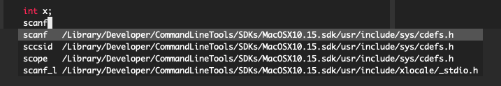

C development on a Mac
Posted on Thu 18 March 2021 in Programming
C development on a Mac has it's fair share of traps and pitfalls, even though Mac is supposed to be POSIX compliant. I'll cover a few of them here, with the hope that nobody repeats the same mistakes :)
XCode CLT Pitfalls
The first thing one does while starting out with C development is to install a compiler. This is slightly more complicated than it looks on Mac: the simple way is to go the way of installing XCode command line tools, but there's a few things here to note:
You have to be an apple developer
This means that you can't have a C/C++ toolchain without being a part of of their developer program. There is a (messy) way of working around this, by instead installing and using GCC with HomeBrew, but I'll get to that in a minute.
XCode CLT uses the clang toolchain
This is by far the most important pitfall, as XCode purposefully misaliases
a lot of stuff. After installing XCode CLT (and provided that you don't have
GCC installed or aliased), try doing a gcc -v or g++ -v. You'd get
Configured with: --prefix=/Library/Developer/CommandLineTools/usr --with-gxx-include-dir=/usr/include/c++/4.2.1
Apple clang version 12.0.0 (clang-1200.0.32.27)
Target: x86_64-apple-darwin19.6.0
Thread model: posix
InstalledDir: /Library/Developer/CommandLineTools/usr/bin
This is quite misleading, as gcc and clang are fundamentally different
compilers. Here's one example of that.
A more accessible example would be this:
int x = 3;
int z = x/++x;
try compiling this with gcc and clang, and be surprised*.
Headers? What Headers?
Headers are also very weirdly located in /Library/Developer/CommandLineTools/SDKs/MacOSX10.15.sdk/usr/include,
and these headers are also not symlinked to /usr/include by the installer.
This sucks, and I struggled with making vim autocomplete work because of this
reason; vim's path searches /usr/include and not this weird obscure path.
Once I manually included it, it looked horrible and I needed to symlink it
to /usr/include worked okayish.

One note is that you could also use the path /Library/Developer/CommandLineTools/SDKs/MacOSX.sdk/usr/include,
as MacOSX.sdk is linked to the latest version of SDK installed. This does not
make the location of includes any less weird.
Another thing to note is that other libraries install their headers in /usr/local/include,
so this discrepancy is bad. This has also not been fixed in Big Sur: how hard
is it to keep a set of headers in /usr/include rather than in this unsightly
place! I mean every UNIX system does this! Ugh
CTags
CLT also ships with the old ctags rather than exuberant ctags, which is basically
useless. Neither is there a simple way to distinguish between the ctags that
it ships and exuberant ctags until it fails hard when you go to make your tags
file, since they have the same ctags command. The way of fixing this is to
install the proper ctags with brew install ctags and then add
alias ctags=/usr/local/include/ctags to your .zshrc.
Using GCC
So you decide that the clang toolchain is not working out for you (maybe because
it's slow or for other reasons), and you decide to switch to the gcc toolchain
(by Toolchain, I refer to all associated tools, so that's gcc, g++, gdb etc).
Installing the tools are quite easy, and they just happen with
brew install gcc gdb. However, gcc and g++ are already taken by clang,
so you'll have to export them in your .zshrc again
alias gcc=/usr/local/bin/gcc-10
alias g++=/usr/local/bin/g++-10
GDB, however, is very tricky to get working right; MacOS due to SIP and
Gatekeeper, does not allow running processes to latch on to other processes.
For GDB to work, it would need to be signed. For this, you'll have to sign
it yourself with a certificate, and add that certificate to the trusted
keychain in your system. I still could not get it to work after this (more
info here), and
just using sudo was a hack that I used while I tried to get GDB to work.
LLDB, however, is much better integrated with debugging, and I eventually
shifted over to using LLDB rather than GDB (aided by this
resource).
The GCC/G++ aliasing is highly recommended, and you could leave out GDB (which is what I've done in my current setup)
Other stuff
make seems to work without a hitch so far, which is a good thing. cscope
also had to be installed with brew, and cscope also works well now. I'll need
to finish setting up my vim environment for C autocompletion and play around
more with CTags and cscope (maybe write about it in the next post :)) For
now, this has unfortunately turned into more of a rant than a how-to, but I
still hoped it help some of you avoid these traps and pitfalls.
*: GCC gives the output as 1, while clang gives it as 0